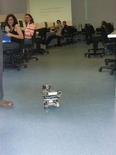

El jueves 22 de Mayo, nos llevamos a Observer al hall de la Escuela para
realizar pruebas del alcance de los módulos de comunicación radio. Para ello nos llevamos
una mesa, que situamos primero a un lado del hall y posteriormente en el centro del mismo,
donde colocar el ordenador de control de Observer:
 Mesa de control
Mesa de control
Para la medición de distancia controlamos a Observer por los pasillos laterales al
hall, para probar hasta donde era posible llegar obteniendo una buena calidad en la
imagen recibida y sin que se perdiese el control del microbot:
Observer en los pasillos de la Escuela
He incluso lo colamos en una de las aulas en plena clase:

Observer en clase
Como cabía esperar, muchos alumnos se acercaban a mirar lo que estaba ocurriendo y
decidimos hacer algo un poco más espectacular: construir un circuito para que Observer lo
siguiese gracias al programa de procesamiento de imagen desarrollado para
Cortocircuito y que ha sido adaptado para
Observer:
 Construyendo el circuito
Construyendo el circuito
Y para que la prueba tuviera un poco de dificultad no construimos un circuito continuo,
sino que lo cortamos en ciertos puntos para probar como se desenvolvía Observer:
¡¡Circuito terminado!!
Habíamos hecho muy pocas pruebas, pero nunca algo parecido. Sin embargo, Observer paso la
prueba con éxito. Era impresionante comprobar como era capaz de, cuando se perdía, deshacer
sus pasos y volver a intentarlo. ¡¡Todo un espectáculo!!:
Situación del circuito en el hall
Vista del circuito
Observer a punto de entrar en la zona discontinua
Finalmente y para terminar, controlamos a Observer desde el hall en dirección a los
exteriores de la Escuela, en otra prueba para determinar el alcance de las comunicaciones:
 Observer se aleja de la Escuela
Observer se aleja de la Escuela
 Vista exterior de la Escuela, con Observer de exploración
Vista exterior de la Escuela, con Observer de exploración
Aunque inicialmente esta actividad no iba dirigida al público, ya sabíamos que se iba a
acercar mucha gente interesada en conocer que es lo que estábamos haciendo. Al final se convirtió
en otra exhibición más... y quizás pueda ser una buena idea de cara a realizar futuras presentaciones
de la Asociación.
Documentos adicionales
video1 (2,8 M)
video2 (2,3 M)
video3 (2,9 M)
video4 (2,4 M)
video5 (2,2 M)
video6 (3,0 M)
video7 (2,4 M)
video8 (2,9 M)
video9 (2,9 M)
video10 (2,9 M)
video11 (3,4 M)
video12 (2,9 M)
video13 (3,2 M)
|
Videos de Observer durante las pruebas en el hall.
|